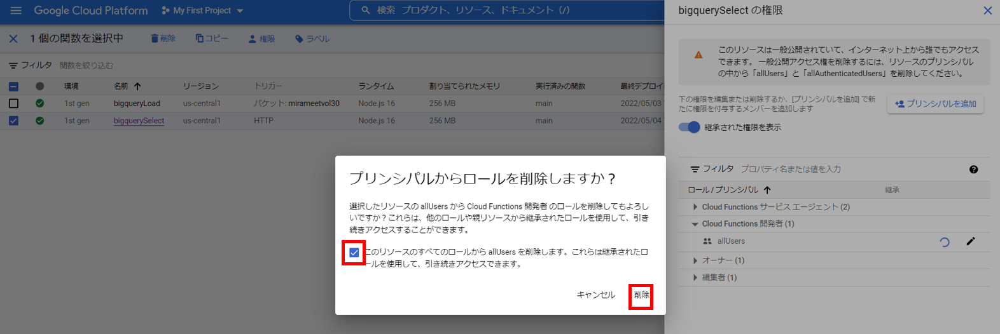
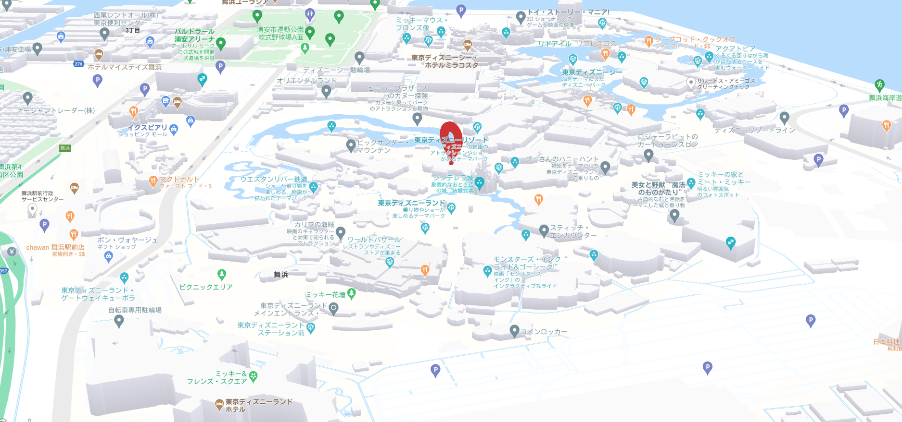

プログラム実行
これまでの手順で作成したプログラムを実行し、一連の流れで最終確認を行います。
実行環境はCloud Shell Editerです。

1. 動作確認
追加でCloud StorageにJSONデータを配置します。
既に２件のデータ（スカイツリー、東京タワー）が登録されているので、追加で３件のデータを
登録し、５件のデータが検索出来ることと 検索結果に応じた画面表示できることを確認します。
追加のJSONデータは、以下リンクよりダウンロードください。
以下３つの住所情報が入っています。
ダウンロードリンク- ディズニーランド
- ユニバーサルスタジオジャパン
エトワール凱旋門

Cloud Shell Editerから、 "http://localhost:3001/" を開きます。
- リクエストパラメーターを付け加え、検索条件値を入れて条件を絞ってみましょう。
検索条件に応じて東京タワーやスカイツリーが表示されるかと思います。

※パラメータ内容
検索条件に応じて東京タワーやスカイツリーが表示されるかと思います。&address=ディズニー &address=ユニバーサル
また、前手順で設定したスタイル設定も反映されていることを確認します。
